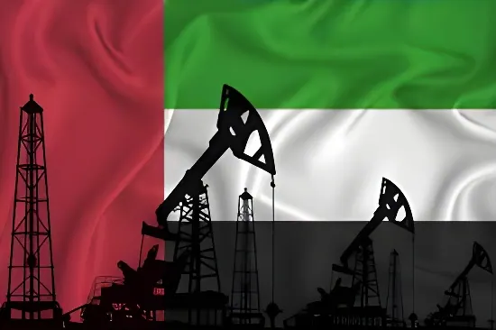

Le 28 avril 2026, Abou Dhabi annonce son retrait de l'Organisation des pays exportateurs de pétrole et de l'alliance OPEP+, effectif dès le 1er mai. Invoquant l'« intérêt national », les Émirats rompent avec 59 ans d'adhésion au cartel. Cette décision, amplifiée par la guerre contre l'Iran et la fermeture du détroit d'Ormuz, marque un tournant structurel pour le marché pétrolier mondial et révèle la rivalité croissante entre Abou Dhabi et Riyad.
La rupture des Émirats arabes unis avec l'OPEP ne sort pas de nulle part. Depuis plusieurs années, Abou Dhabi accumule les frustrations face aux quotas de production imposés par le cartel. Les EAU ont investi plus de 150 milliards de dollars dans leur compagnie nationale ADNOC (Abu Dhabi National Oil Company) pour porter leur capacité à cinq millions de barils par jour d'ici 2027. Or, l'OPEP les contraignait à produire en moyenne 2,95 millions de barils par jour en 2024 — bien en deçà de leur potentiel réel. Rester membre signifiait laisser une part croissante de cette capacité inutilisée.
La guerre déclenchée le 28 février 2026 par les frappes américano-israéliennes sur l'Iran a précipité le calendrier. La fermeture du détroit d'Ormuz par l'Iran — qualifiée par l'Agence internationale de l'énergie de « plus grande crise pétrolière de l'histoire » — a frappé de plein fouet les économies du Golfe. Dans ce contexte de choc énergétique et de grande incertitude, les Émirats ont jugé qu'ils ne pouvaient plus se permettre de sacrifier leur production au nom d'une discipline collective dont ils ne tiraient plus suffisamment bénéfice.
Dans un contexte où le détroit d'Ormuz reste bloqué, les Émirats disposent d'un avantage infrastructurel décisif : l'oléoduc Abu Dhabi–Fujairah, construit après les menaces iraniennes de 2012. Cette infrastructure relie les champs pétroliers d'Abou Dhabi directement au port de Fujairah, situé à l'est du détroit, sur la mer d'Arabie. Elle permet d'exporter le brut sans passer par Ormuz, avec une capacité de 1,5 million de barils par jour.
Si cette capacité ne compense pas l'intégralité des flux bloqués dans le détroit, elle positionne les Émirats comme l'un des rares producteurs du Golfe capables d'exporter durablement malgré la crise. C'est précisément ce que les analystes appellent « jouer le coup d'après » : avec l'Iran et l'Irak dont les infrastructures sont endommagées par la guerre, Abou Dhabi anticipe une demande massive de pétrole de substitution pour alimenter les marchés asiatiques et occidentaux dès la reprise des flux.
Première crise ouverte entre les EAU et l'OPEP : Abou Dhabi refuse un accord d'extension des quotas, exigeant une révision de sa base de référence de production. La crise est résolue par un compromis, mais la méfiance s'installe.
Les EAU achèvent l'expansion de l'ADNOC, portant leur capacité à 4,8 millions de barils par jour. Les quotas OPEP restent bien inférieurs à ce niveau, entraînant une sous-utilisation croissante des investissements émiratis.
Frappes américano-israéliennes sur l'Iran. L'Iran ferme le détroit d'Ormuz. L'AIE déclare la plus grande crise pétrolière de l'histoire. Le pétrole mondial manque sur les marchés.
L'agence de presse officielle émiratie annonce le retrait de l'OPEP et de l'OPEP+, au nom de l'« intérêt national ». Le prix du baril bondit de 5 %, dépassant les 111 dollars. Prise d'effet : 1er mai 2026.
Au-delà du contexte immédiat lié à la guerre en Iran, la sortie des Émirats s'inscrit dans une rivalité de plus en plus profonde entre Abou Dhabi et Riyad. D'un côté, Mohammed ben Zayed (MBZ), dirigeant des EAU ; de l'autre, Mohammed ben Salmane (MBS), prince héritier d'Arabie saoudite. Les deux hommes s'affrontent sur plusieurs dossiers régionaux : ils soutiennent des camps opposés au Yémen — MBZ privilégiant la partition du pays, MBS défendant son unité — et financent des factions adverses dans la guerre civile au Soudan.
L'OPEP était un terrain de compromis imposé. En quittant le cartel, Abou Dhabi se libère de l'hégémonie saoudienne sur la politique de production. L'Arabie saoudite produit deux fois et demie plus de pétrole que les EAU et orientait toutes les décisions stratégiques de l'organisation. Pour MBZ, ce départ est donc aussi une déclaration d'indépendance géopolitique, au moment où Riyad se rapproche de la Chine, du Pakistan et de la Turquie — un axe dont les EAU ne veulent pas.
La sortie des EAU prive l'OPEP+ de l'un de ses membres les plus précieux : en février 2026, les Émirats contribuaient à hauteur de 1,54 million de barils par jour à la capacité de réserve du groupe, soit environ 25 % du total. Cette réserve sert d'amortisseur en cas de choc : elle permet au cartel de répondre collectivement à une perturbation de l'offre. En perdant ce levier, l'OPEP+ voit sa capacité à gérer les déséquilibres du marché substantiellement réduite.
Les marchés ont immédiatement intégré cette réalité. Si les prix du baril restent élevés — autour de 115 dollars, soutenus par la fermeture d'Ormuz —, les analystes prévoient une volatilité structurellement plus forte à moyen terme. L'absence de coordination avec les EAU introduit une incertitude supplémentaire : un producteur majeur agit désormais en solo, sans tenir compte des intérêts collectifs du cartel. Cela ouvre aussi la voie à d'éventuels départs en cascade d'autres membres tentés par la même autonomie.
| Acteur | Position | Intérêt principal |
|---|---|---|
| Émirats arabes unis | Sortie de l'OPEP | Libérer la production, autonomie stratégique |
| Arabie saoudite | Maintien de l'OPEP+ | Contrôle des prix, leadership régional |
| Russie | OPEP+ sans les EAU | Coordination partielle, maintien des prix |
| États-Unis | Favorable au départ émirati | Baisse des prix, affaiblissement du cartel |
| Asie (Japon, Chine) | Importateurs inquiets | Sécuriser l'approvisionnement alternatif |
Derrière la décision conjoncturelle, une vision de long terme se dessine. Les EAU équilibrent leur budget avec un baril à moins de 50 dollars — l'Arabie saoudite a besoin de 90 dollars. Cette résilience financière leur donne la liberté d'une politique de prix différente. Plus profondément, Abou Dhabi a fait le pari de monétiser ses réserves sans attendre : alors que la demande mondiale de pétrole approche d'un plateau et que la transition énergétique s'accélère (en particulier en Chine), le risque que les hydrocarbures deviennent des « actifs échoués » impose de les valoriser dès maintenant.
Cette logique est cohérente avec la cible de neutralité carbone que les EAU se sont fixée pour 2050 — dix ans avant l'Arabie saoudite. Abou Dhabi veut donc à la fois produire davantage de pétrole aujourd'hui et anticiper un monde qui en consommera moins demain. Une équation que le cadre contraignant de l'OPEP rendait impossible à résoudre.
« En dehors du groupe, les Émirats arabes unis auront à la fois la motivation et la capacité d'augmenter leur production, ce qui laisse présager un marché pétrolier potentiellement plus volatil à mesure que la capacité de l'OPEP à lisser les déséquilibres de l'offre diminue. »
— Jorge Leon, responsable de l'analyse géopolitique, Rystad Energy, avril 2026Le départ des Émirats arabes unis de l'OPEP illustre une fracture profonde au sein du monde producteur : entre pays qui doivent défendre leurs prix pour équilibrer leur budget et ceux qui peuvent se permettre de produire davantage pour sécuriser leur avenir. Abou Dhabi joue un coup d'après : construire un modèle économique moins dépendant du tourisme et de la finance internationale — deux secteurs gravement fragilisés par la guerre en Iran — en maximisant dès maintenant ses revenus pétroliers. Ce faisant, les EAU affaiblissent un cartel déjà ébranlé par les conflits régionaux, laissant l'Arabie saoudite seule face à la charge de stabiliser un marché qui, pour la première fois depuis des décennies, risque de lui échapper.